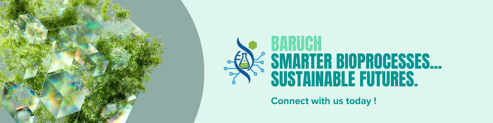

What we do...
Baruch is a scientific research and consulting company based in Gothenburg,
Sweden.
Our work focuses on integrating Artificial Intelligence and Machine Learning techniques to advance Bioprocess Engineering.
We specialize in bioprocess design, optimization, and automation, leveraging cutting-edge AI/ML tools to deliver scalable, sustainable, and future-ready solutions.
Our work supports process efficiency, resource valorization, and the transition toward a circular bioeconomy.
Services we offer...
At Baruch, we offer a blend of scientific knowledge and digital expertise to support your innovation journey.
Bioprocess Engineering & Consulting
- Process design, optimization, and scale-up.
- Biomass conversion and biofuels development.
- Performance & Accessibility Audits.
- Fermentation technologies for food, energy, and material applications.
- Waste valorization and resource efficiency.
Automation & Digital Solutions
- Process automation for improved efficiency and reliability.
- Data analytics, modeling, and visualization.
- Machine learning and AI applications in biotechnology and engineering.
- Simulation and predictive tools for decision-making.
Sustainable Bioeconomy Consulting
- Circular economy strategies for industries and municipalities.
- Techno-economic and environmental assessments.
- Roadmaps for green innovation and resource recovery.
- Policy and strategy support for sustainable transitions.
Work with us...
At Baruch, we value curiosity, innovation, and problem-solving.
We welcome collaborations with researchers, startups, and industries that share our passion for building a sustainable future.
Opportunities include:
- Research partnerships.
- Industry collaborations.
- Internships and student projects.
- Joint innovation initiatives.
If you are interested in joining forces with us, we'd love to hear from you.
Our Mission...
Baruch AB was founded to advance sustainable technologies through scientific expertise and digital innovation.
We aim to provide tailored research and consulting to help industries, research institutes, and policy makers unlock the potential of renewable resources and data-driven bioprocesses.
To design efficient, scalable, and sustainable processes by integrating bioprocess expertise, automation, and AI-driven insights, reducing waste and accelerating the transition to renewable practices.
Our Values...
- Innovation: Leveraging creativity and technology to drive meaningful progress.
- Sustainability: Embedding environmental responsibility in every solution.
- Integrity: Upholding transparency, trust, and ethical practices.
- Collaboration: Building partnerships that foster knowledge sharing and growth.
Contact us...
We'd love to hear from you.
You can use the contact form below to reach us directly.
Bahiru Tsegaye Ayalew
CEO & Founder, Baruch AB.
Email: bahiru@baruch.se
Phone: +46-728318144
